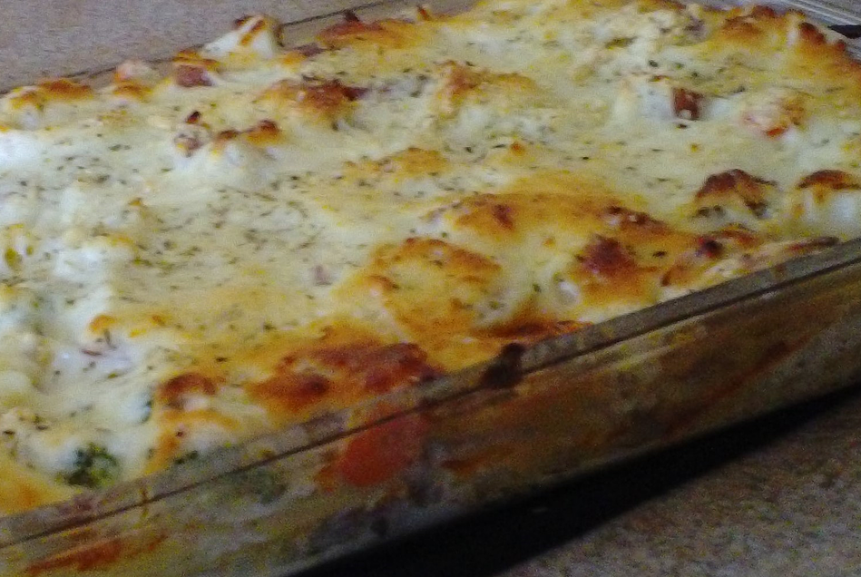

Lasagne

Auhenic Dolmio Lasagne
This rich and creamy lasagne made with dolmio white sauce and dolmio red sauce is all you need for a propper hearty italian meal.
Simple and easy to make. Prep Time 5 mins. Cook Time 45 mins.
Ingredients
-
500g lean minced beef
-
6 lasagne sheets (about 100g)
-
500g Dolimo Original Creamy Lasagne Sauce
-
500g Dolmio Original Smooth Tomato
Method
-
Pre-heat the oven to 200°C / fan oven 180°C / Gas 5. Heat a large frying pan and add the mince, cook over a high heat, stirring well until browned and cooked through. Pour in the Domio Tomato Sauce, mix and simmer for 5 mins then remove from heat.
-
Tip half the Bolognese mixture into a large rectangular baking dish measuring about 26cm x 20cm. Arrange 3 lasagne sheets on top, then spread half the Dolmio Creamy Sauce over them.Repeat the layers, then sprinkle the grated cheese evenly over the surface.
-
Bake for around 30-45 minutes, until cooked and golden brown. Allow to stand for a few minutes, then serve.